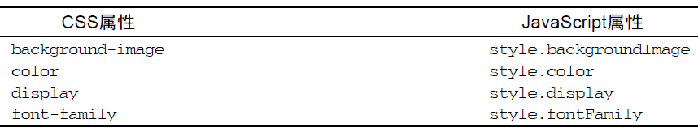

12.2.1 访问元素的样式
任何支持style 特性的HTML 元素在JavaScript 中都有一个对应的style 属性。这个style 对象是CSSStyleDeclaration 的实例，包含着通过HTML 的style 特性指定的所有样式信息，但不包含与外部样式表或嵌入样式表经层叠而来的样式。在style 特性中指定的任何CSS 属性都将表现为这个style 对象的相应属性。对于使用短划线（分隔不同的词汇，例如background-image）的CSS 属性名，必须将其转换成驼峰大小写形式，才能通过JavaScript 来访问。下表列出了几个常见的CSS 属性及其在style 对象中对应的属性名。

多数情况下，都可以通过简单地转换属性名的格式来实现转换。其中一个不能直接转换的CSS 属性就是float。由于float 是JavaScript 中的保留字，因此不能用作属性名。“DOM2 级样式”规范规定样式对象上相应的属性名应该是cssFloat；Firefox、Safari、Opera 和Chrome 都支持这个属性，而IE支持的则是styleFloat。
只要取得一个有效的DOM元素的引用，就可以随时使用JavaScript 为其设置样式。以下是几个例子。
var myDiv = document.getElementById("myDiv");
//设置背景颜色
myDiv.style.backgroundColor = "red";
//改变大小
myDiv.style.width = "100px";
myDiv.style.height = "200px";
//指定边框
myDiv.style.border = "1px solid black";
在以这种方式改变样式时，元素的外观会自动被更新。
在标准模式下，所有度量值都必须指定一个度量单位。在混杂模式下，可以将style.width 设置为"20"，浏览器会假设它是"20px"；但在标准模式下，将style.width 设置为"20"会导致被忽略——因为没有度量单位。在实践中，最好始终都指定度量单位。
通过style 对象同样可以取得在style 特性中指定的样式。以下面的HTML 代码为例。
<div id="myDiv" style="background-color:blue; width:10px; height:25px"></div>
在style 特性中指定的样式信息可以通过下列代码取得。
alert(myDiv.style.backgroundColor); //"blue"
alert(myDiv.style.width); //"10px"
alert(myDiv.style.height); //"25px"
如果没有为元素设置style 特性，那么style 对象中可能会包含一些默认的值，但这些值并不能准确地反映该元素的样式信息。
1. DOM 样式属性和方法
“DOM2级样式”规范还为style 对象定义了一些属性和方法。这些属性和方法在提供元素的style特性值的同时，也可以修改样式。下面列出了这些属性和方法。
-
cssText：如前所述，通过它能够访问到style 特性中的CSS 代码。
-
length：应用给元素的CSS 属性的数量。
-
parentRule：表示CSS 信息的CSSRule 对象。本节后面将讨论CSSRule 类型。
-
getPropertyCSSValue(propertyName)：返回包含给定属性值的CSSValue 对象。
-
getPropertyPriority(propertyName)：如果给定的属性使用了!important 设置，则返回"important"；否则，返回空字符串。
-
getPropertyValue(propertyName)：返回给定属性的字符串值。
-
item(index)：返回给定位置的CSS 属性的名称。
-
removeProperty(propertyName)：从样式中删除给定属性。
-
setProperty(propertyName,value,priority)：将给定属性设置为相应的值，并加上优先权标志（"important"或者一个空字符串）。
通过cssText 属性可以访问style 特性中的CSS代码。在读取模式下，cssText 返回浏览器对style特性中CSS 代码的内部表示。在写入模式下，赋给cssText 的值会重写整个style 特性的值；也就是说，以前通过style 特性指定的样式信息都将丢失。例如，如果通过style 特性为元素设置了边框，然后再以不包含边框的规则重写cssText，那么就会抹去元素上的边框。下面是使用cssText 属性的一个例子。
myDiv.style.cssText = "width: 25px; height: 100px; background-color: green";
alert(myDiv.style.cssText);
设置cssText 是为元素应用多项变化最快捷的方式，因为可以一次性地应用所有变化。
设计length 属性的目的，就是将其与item()方法配套使用，以便迭代在元素中定义的CSS 属性。
在使用length 和item()时，style 对象实际上就相当于一个集合，都可以使用方括号语法来代替item()来取得给定位置的CSS 属性，如下面的例子所示。
for (var i=0, len=myDiv.style.length; i < len; i++){
alert(myDiv.style[i]); //或者myDiv.style.item(i)
}
无论是使用方括号语法还是使用item()方法，都可以取得CSS 属性名（"background-color"，不是"backgroundColor"）。然后，就可以在getPropertyValue()中使用取得的属性名进一步取得属性的值，如下所示。
var prop, value, i, len;
for (i = 0, len = myDiv.style.length; i < len; i++) {
prop = myDiv.style[i]; //或者 myDiv.style.item(i)
value = myDiv.style.getPropertyValue(prop);
alert(prop + " : " + value);
}
getPropertyValue()方法取得的始终都是CSS 属性值的字符串表示。如果你需要更多信息，可以使用getPropertyCSSValue()方法，它返回一个包含两个属性的CSSValue 对象，这两个属性分别是：cssText 和cssValueType。其中，cssText 属性的值与getPropertyValue()返回的值相同，而cssValueType 属性则是一个数值常量，表示值的类型：0 表示继承的值，1 表示基本的值，2 表示值列表，3 表示自定义的值。以下代码既输出CSS 属性值，也输出值的类型。
var prop, value, i, len;
for (i = 0, len = myDiv.style.length; i < len; i++) {
prop = myDiv.style[i]; //或者myDiv.style.item(i)
value = myDiv.style.getPropertyCSSValue(prop);
alert(prop + " : " + value.cssText + " (" + value.cssValueType + ")");
}
运行一下
在实际开发中，getPropertyCSSValue()使用得比getPropertyValue()少得多。IE9+、Safarie3+以及Chrome 支持这个方法。Firefox 7 及之前版本也提供这个访问，但调用总返回null。
要从元素的样式中移除某个CSS 属性，需要使用removeProperty()方法。使用这个方法移除一个属性，意味着将会为该属性应用默认的样式（从其他样式表经层叠而来）。例如，要移除通过style特性设置的 border 属性，可以使用下面的代码。
myDiv.style.removeProperty("border");
在不确定某个给定的CSS 属性拥有什么默认值的情况下，就可以使用这个方法。只要移除相应的属性，就可以为元素应用默认值。
除非另有说明，本节讨论的属性和方法都得到了IE9+、Firefox、Safari、Opera 9+以及Chrome 的支持。
2. 计算的样式
虽然style 对象能够提供支持style 特性的任何元素的样式信息，但它不包含那些从其他样式表层叠而来并影响到当前元素的样式信息。“DOM2 级样式”增强了document.defaultView，提供了getComputedStyle()方法。这个方法接受两个参数：要取得计算样式的元素和一个伪元素字符串（例如":after"）。如果不需要伪元素信息，第二个参数可以是null。getComputedStyle()方法返回一个CSSStyleDeclaration 对象（与style 属性的类型相同），其中包含当前元素的所有计算的样式。
以下面这个HTML 页面为例。
<!DOCTYPE html>
<html>
<head>
<title>
Computed Styles Example
</title>
<style type="text/css">
#myDiv { background-color: blue; width: 100px; height: 200px; }
</style>
</head>
<body>
<div id="myDiv" style="background-color: red; border: 1px solid black">
</div>
</body>
</html>
运行一下
应用给这个例子中<div>元素的样式一方面来自嵌入式样式表（<style>元素中的样式），另一方面来自其style 特性。但是，style 特性中设置了backgroundColor 和border，没有设置width和height，后者是通过样式表规则应用的。以下代码可以取得这个元素计算后的样式。
var myDiv = document.getElementById("myDiv");
var computedStyle = document.defaultView.getComputedStyle(myDiv, null);
alert(computedStyle.backgroundColor); // "red"
alert(computedStyle.width); // "100px"
alert(computedStyle.height); // "200px"
alert(computedStyle.border); // 在某些浏览器中是"1px solid black"
运行一下
在这个元素计算后的样式中，背景颜色的值是"red"，宽度值是"100px"，高度值是"200px"。我们注意到，背景颜色不是"blue"，因为这个样式在自身的style 特性中已经被覆盖了。边框属性可能会也可能不会返回样式表中实际的border 规则（Opera 会返回，但其他浏览器不会）。存在这个差别的原因是不同浏览器解释综合（rollup）属性（如border）的方式不同，因为设置这种属性实际上会涉及很多其他属性。在设置border 时， 实际上是设置了四个边的边框宽度、颜色、样式属性（ border-left-width 、border-top-color 、border-bottom-style ， 等等）。因此， 即使computedStyle.border 不会在所有浏览器中都返回值，但computedStyle.borderLeftWidth 会返回值。
需要注意的是，即使有些浏览器支持这种功能，但表示值的方式可能会有所区别。例如，Firefox 和Safari 会将所有颜色转换成RGB 格式（例如红色是rgb(255,0,0)）。因此，在使用getComputedStyle()方法时，最好多在几种浏览器中测试一下。
IE 不支持getComputedStyle()方法，但它有一种类似的概念。在IE 中，每个具有style 属性的元素还有一个currentStyle 属性。这个属性是CSSStyleDeclaration 的实例，包含当前元素全部计算后的样式。取得这些样式的方式也差不多，如下面的例子所示。
var myDiv = document.getElementById("myDiv");
var computedStyle = myDiv.currentStyle;
alert(computedStyle.backgroundColor); //"red"
alert(computedStyle.width); //"100px"
alert(computedStyle.height); //"200px"
alert(computedStyle.border); //undefined
运行一下
与DOM 版本的方式一样，IE 也没有返回border 样式，因为这是一个综合属性。
无论在哪个浏览器中，最重要的一条是要记住所有计算的样式都是只读的；不能修改计算后样式对象中的CSS 属性。此外，计算后的样式也包含属于浏览器内部样式表的样式信息，因此任何具有默认值的CSS 属性都会表现在计算后的样式中。例如，所有浏览器中的visibility 属性都有一个默认值，但这个值会因实现而异。在默认情况下，有的浏览器将visibility 属性设置为"visible"，而有的浏览器则将其设置为"inherit"。换句话说，不能指望某个CSS 属性的默认值在不同浏览器中是相同的。如果你需要元素具有某个特定的默认值，应该手工在样式表中指定该值。